Пра́га (чеш. Praha [ˈpraɦa]) — статутный город и столица Чешской Республики, административный центр Среднечешского края
и двух его районов: Прага-Восток и Прага-Запад. Образует самостоятельную административно-территориальную единицу страны.
Население: 1,3 млн человек (2018 год). Четырнадцатый по населению город в странах Евросоюза. Расположена на берегах реки
Влтавы в сорока километрах от её впадения в Лабу.
Главный политический, экономический и культурный центр Чехии. Один из крупнейших туристических центров Европы.
Количество туристов в 2012 году превысило 5,4 млн человек.
С X века столица Чешского государства; в 1526—1918 годы главный город Богемии под властью Габсбургов; с 1918 по 1992 год
столица Чехословакии; с 1993 года — Чешской Республики. Исторический центр внесён в список Всемирного наследия ЮНЕСКО.
ЭТИМОЛОГИЯ
Топоним Praha связывают с чешским словом «prah» (порог), при этом подразумевается «речной порог», которых в
пределах Праги несколько.
Народная этимология выводит название из легенды о княжне Либуше, которая отправила слуг в лес, которые там нашли
человека, тесавшего порог дома, отсюда название Прага.
Иногда происхождение названия связывают со словом «pražení» (закалка, обжарка), так как в этом регионе вырабатывали
много хлеба.
ИСТОРИЯ ПРАГИ
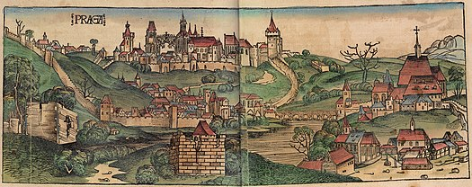
Первые исторические сведения о поселениях славян на территории современного города относятся к VI веку н. э. В X веке
Прага стала столицей Чешского государства, в конце этого же столетия была выстроена рыночная площадь.
В первой половине XIII века вокруг каменных построек в районе площади стали возводить крепостные стены.
Конкурировавшая в средние века наравне с Парижем за звание столицы Европы Прага, оказавшись вне первой волны
глобализации в XVI в., стала периферийным её городом.
После поражения Австрии в австро-прусской войне 1866 года, когда город был оккупирован прусскими войсками, австрийское
командование пришло к выводу, что он окончательно утратил своё оборонное значение. Это привело к решению о сносе большей
части городских укреплений, прежде всего вокруг Нового Места и Малой Страны. Результатом этого явилось бурное развитие
пригородов Праги: Краловске-Винограды, Жижков, Карлин, Вршовице, Нусле, Смихов, Коширже, Подоли, Височани и многих
других, где, в отличие от плотно застроенных старых кварталов, возникли десятки и сотни новых заводов и фабрик,
привлекавших рабочую силу из сельской местности.
В XIX веке Пражская агломерация становилась наиболее важным промышленным центром всей империи. Особую роль играли
предприятия машиностроения и металлообработки, используя недалеко расположенный угольный бассейн и металлургические
предприятия города Кладно. Вместе с тем, боясь дальнейшего усиления Праги и Чехии в целом и, как следствие, требования
ею особой политической роли, венское правительство препятствовало слиянию пригородов с городом. До падения монархии в
1918 году такое разрешение получили только Иозефов, Вышеград, Голешовице-Бубни и Либень. Отдельные пригороды разрослись
настолько, что получили статус города, при этом достигая внушительных размеров. Например, Краловске-Винограды перед
Первой мировой войной насчитывали около 100 тыс. жителей, что выводило их на третье место среди всех чешских и моравских
городов, после собственно Праги и Брно.
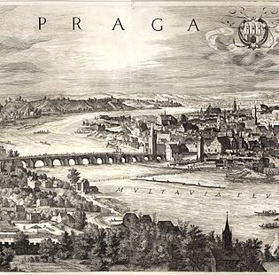
После распада осенью 1918 года Австро-Венгерской империи и образования независимой Чехословацкой Республики Прага стала
её столицей. Город существовал относительно спокойно до начала Второй мировой войны в 1939 году. Освобождён от немецких
войск 6 мая 1945 года участниками Пражского национального восстания (9 мая советские войска вступили в практически
очищенную от немецких войск Прагу). К счастью, война не оставила в городе серьёзных разрушений. В 1960 году Прага стала
столицей Чехословацкой Социалистической Республики и пробыла таковой до 1993 года, когда после «бархатного развода»
Чехословацкой федерации стала столицей Чехии. Она была основным местом событий Пражской весны 1968 года, когда была
предпринята попытка внутреннего реформирования КПЧ, её вооружённого подавления силами стран-участников Варшавского
договора в августе 1968 года, а затем центром бархатной революции 1989 года.
После образования в 1918 году независимого чехословацкого государства и провозглашения Праги его столицей уже ничто не
мешало её развитию в качестве метрополии. В 1922 году к городу было присоединено 37 окружающих её городов и местечек,
так что население города выросло почти втрое до 677 тыс. жителей, а территория с 21 км² увеличилась до 171,5 км², выведя
её тем самым на уровень крупных европейских столиц своего времени. Быстрый рост Праги, как результат её центральной роли
в стране и дальнейшего развития промышленности, привёл к росту населения до 850 тыс. к 1930 году и одного миллиона к
1939 году. В эти годы также большое развитие претерпела транспортная инфраструктура города: трамвайная сеть охватила
почти всю её территорию, окраины получили автобусное сообщение, началось строительство линий троллейбуса. В середине
1930-х годов было принято решение о строительстве в Праге метрополитена, однако начавшиеся работы были прерваны в связи
с немецкой оккупацией и Второй мировой войной. На периферии возникали новые жилые районы как вилловой застройки
(Оржеховка, Ганспаулка, Баба, Бубенеч, Заградни-Место), так и многоэтажных домов (Голешовице, Дейвице, Вршовице,
Страшнице, Подоли и др.), отличавшиеся значительным для своего времени уровнем благоустройства, а также детские сады,
школы, рабочие общежития, дома культуры, спортивные объекты, например, стадион на Страгове. Чешские архитекторы своими
известными творениями в стиле модерн, кубизм (уникальное явление в мировой архитектуре) и функционализм подняли
зодчество города на самый передовой уровень. 1930-е годы отмечены взрывным развитием театральной и кинематографической
жизни.
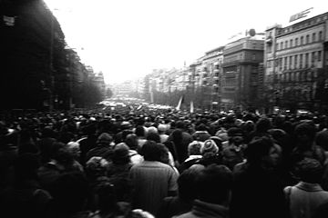
Аннексия Судет, немецкая оккупация Чехии и её последующее освобождение Американской и Красной армией привели к тому, что
Прага, в которой в течение многих веков вместе проживали чехи, немцы и евреи, фактически стала моноэтничным городом.
Многие видные политические и культурные деятели подверглись репрессиям как от нацистского, так и коммунистического
режима и были казнены, брошены в тюрьмы, либо вынуждены эмигрировать. Две наиболее массовые волны эмиграции связаны с
приходом коммунистической партии к власти в феврале 1948 года и вторжением войск стран-членов Варшавского договора во
главе с СССР в августе 1968 года. Военные потери населения привели к тому, что предвоенная численность была
восстановлена только к 1960 году. Впоследствии территориальный и демографический рост происходил, главным образом, за
счёт дальнейшего присоединения окрестных населённых пунктов в 1968 и 1974 годах, в результате число жителей одно время
превышало 1200 тыс. человек. В последние годы наблюдается его уменьшение вследствие переселения жителей из скученных
центральных районов в пригородные посёлки.
В послевоенный период продолжилось развитие инфраструктуры и благоустройства. Вместе с тем стремление к скорейшему
решению жилищной проблемы, как и в других социалистических странах, привело в 1950—1980-е годы к появлению на окраинах
города доступного жилья — невыразительных микрорайонов из панельных домов повышенной этажности, отличавшихся скромными
размерами жилой площади квартир, невысоким уровнем коммунальных удобств и низкой эксплуатационной экономичностью. При
этом многие ценные исторические здания в центре города оказались обделены вниманием и подвергались медленной деградации.
Положение удалось исправить только в последнее время, когда большинство зданий обрело хозяина, часто в лице наследников
прежних владельцев. Многие жилые районы, включая находящиеся в непосредственной близости к центру города (в частности,
Жижков, Карлин, Смихов, Винограды), были почти целиком реконструированы, а располагающееся в них жильё приобрело
престижный статус.
В августе 2002 года Прага сильно пострадала от катастрофического разлива реки Влтавы, в результате которого была
затоплена значительная часть города и на несколько месяцев выведен из строя метрополитен.
ФИЗИКО-ГЕОГРАФИЧЕСКАЯ ХАРАКТЕРИСТИКА
Прага раскинулась вдоль обоих берегов реки Влтавы. Протяжённость реки в черте города: 29,8 км, средняя глубина 2,75 м,
максимальная 10,5 м. Во Влтаву на всей территории Праги впадает одна единственная река (Бероунка, левый приток), пять
ручьёв на левом берегу и четыре — на правом, вдоль левого берега располагается канал Чертовка[en]. Город расположен на
пяти холмах (по данным PIS — пражской информационной службы — на девяти), разделённых рекой. На ней девять островов.
Климат
Климат мягкий умеренно континентальный, зимы относительно мягкие, малоснежные, а лето обычно дождливое и тёплое. Весна
приходит в марте, а осень оканчивается в начале декабря.
Средняя температура воздуха в январе составляет −1,4 °C, в июле +18,2 °C. Суммарное среднее годовое количество осадков
составляет около 500 мм, самые дождливые месяцы с мая по август, самые сухие — январь и февраль. Город богат зелёными
насаждениями, они составляют чуть менее половины территории города.
АДМИНИСТРАТИВНОЕ ДЕЛЕНИЕ
Общая площадь территории Праги в административных границах города составляет 496,07 км², при этом на долю застройки
приходится всего лишь 48,71 км². Основную часть, как ни странно, занимают земли сельскохозяйственного назначения —
209,84 км² (в том числе пашня — 154,30 км², фруктовые сады и огородные участки — 46,81 км², луга — 8,68 км² и даже
виноградники — 0,10 км²). Кроме того, в черте города находится 49,20 км² лесов.
Прага в настоящее время подразделяется на 22 административных округа и 57 городских частей (основной субъект местного
самоуправления) в их составе. Однако с точки зрения почтового, избирательного, судебного и полицейского
административного законодательства она по-прежнему (с 1960 года) делится на 10 городских округов.
НАСЕЛЕНИЕ
На 31 декабря 2006 года численность жителей города составляла 1188,1 тыс. человек (преобладает женское население: на 48
мужчин приходится 52 женщины). За последние годы население Праги возросло на 6,5 тыс. человек, в том числе на 0,25 тыс.
за счёт естественного прироста, который впервые с конца 1970-х годов оказался положительным, и на 6,25 тыс. за счёт
миграции (в том числе и из РФ). При этом численность населения города чешской национальности вследствие миграции
уменьшилась на 4,5 тыс. человек (явление субурбанизации), а лиц иностранного происхождения увеличилась на 10,75 тыс.
человек. Максимальный прирост численности отмечен среди граждан Украины (чуть менее половины всего прироста), России и
Вьетнама. В результате общее число иностранных граждан, постоянно или временно проживающих в Праге, превысило 100 тыс.
человек, в том числе граждане Украины около 35 тыс., Словакии около 15 тыс., России около 10 тыс., Вьетнама около 6 тыс.
жителей. Примерно 28 % из иностранных жителей имеют постоянное место жительства в Чехии, остальные находятся в стране на
основании долгосрочных виз.
По возрастному составу 12,3 % жителей Праги находятся в возрасте 0—15 лет, 72,1 % в возрасте 15—65 лет и 15,6 % старше
65 лет. Почти 900 жителей имеют возраст более 100 лет. В структуре населения до 40 лет небольшое численное преобладание
имеют мужчины, после 45 лет — женщины (для возрастной группы старше 80 лет двукратное и более).
Государственным языком является чешский, им владеет практически всё население города, широкое распространение также
имеют словацкий (его понимает абсолютное большинство чехов), немецкий, русский и английский. Здесь до сих пор можно
услышать идиш.
Большая часть верующих, около 70 % исповедует католицизм. По данным переписи 2001 года более 67 % жителей Праги являются
атеистами, а ещё порядка 8 % не смогли однозначно ответить на данный вопрос.
ЭКОНОМИКА
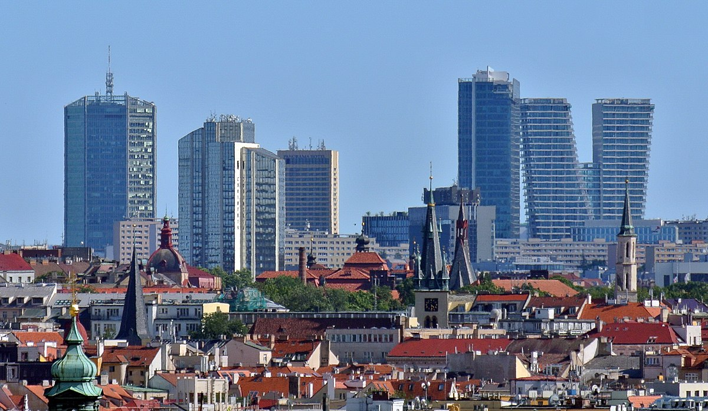
Из отраслей промышленности в Праге развиты машиностроение (станкостроение, транспортное, электротехническое и др.),
химическая, текстильная, швейная, полиграфическая, пищевая.
В городе сохранилась, судя по всему, последняя в мире действующая система городской пневматической почты, появившаяся
впервые в 1887 году. Во время наводнения 2002 года несколько станций были повреждены, и система перестала работать.
Чешская почта собирается отреставрировать её и вновь ввести в действие. Помимо музейно-исторического значения, такая
система имеет прикладной характер: так, например, телеграмма или мелкий пакет с почтамта в Новом городе могут быть
доставлены на Пражский град в течение 3-5 минут, что существенно быстрее любого другого вида транспорта, включая
курьерскую службу.
Среднемесячная заработная плата в 2007 году составила 35 115 крон в предпринимательском секторе и 27 385 крон в
непредпринимательском (в основном, бюджетном) секторе, что больше показателя 2006 года на 2 416 крон (7,4 %) и 385 крон
(1,4 %) соответственно. Традиционно в городе оплата труда выше, чем в среднем по Чехии и её отдельным краям. Так, в
центральной Чехии средняя заработная плата в предпринимательском секторе за 2007 год составила 25 432 крон (72,4 % от
пражского показателя) и 22 686 крон в непредпринимательском (82,8 %).
Туризм
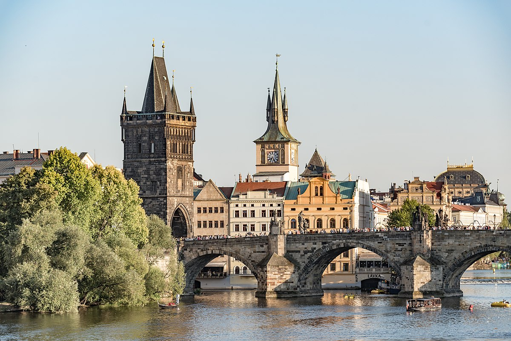
После начала рыночных реформ туризм оказался наиболее быстрорастущей отраслью города. Буквально за несколько лет Прага
превратилась из малоизвестного в масштабах Европы города в настоящую мекку туристов. По данным Всемирной туристической
организации к 2005 году она вышла на шестое место в Европе по числу посещений после Лондона, Парижа, Рима, Мадрида и
Берлина. Этому способствовало прежде всего быстрое развитие гостиничной сети города, увеличившейся в несколько раз. К
началу 2007 года в нём насчитывалось 29 пятизвёздочных, 126 четырёхзвёздочных и более 250 трёхзвёздочных отелей, число
мест в которых достигает 90 тыс., а также 4 отеля, оборудованные в поставленных у причала пассажирских теплоходах,
несколько мотелей для автомобилистов и огромное число пансионов, хостелов, молодёжных общежитий, кемпингов и
апартамент-отелей. По данным рейтинга всемирно известного туристического оператора The TripAdvisor Travelers’ Choice в
2006 году два пражских отеля Riverside Hotel и Hotel La Palais включены в число десяти наиболее роскошных отелей
мира.
В настоящее время более 110 тысяч жителей Праги (около 20 % экономически активного населения) работают в отраслях, так
или иначе связанных с обслуживанием въездного и внутреннего туризма. Общее число туристов, посетивших город, превысило в
2018 году 7,5 млн человек, при этом средний турист провёл в гостиницах 3,7 ночи, что также несколько превышает
среднеевропейский уровень. Вместе с тем отмечается, что Прага далеко не исчерпала потенциал своего развития, имея все
возможности привлекать гораздо больше гостей в связи с проведением культурных, спортивных, общественно-политических,
экономических, научных и других международных массовых мероприятий.
ТРАНСПОРТ
Прага является также важным узлом международного автомобильного транспорта. В ней сходятся автомагистрали D1 Прага —
Брно (— Братислава) — Острава (— Катовице — Варшава), D5 Прага — Пльзень (— Нюрнберг), D8 Прага — Усти-над-Лабем (—
Дрезден — Берлин) и D11 Прага — Градец-Кралове (в дальнейшем планируется её продолжение до Щецина и Оломоуца), а также
несколько скоростных шоссе. В настоящее время ведётся строительство магистрали D3 Прага — Ческе-Будеёвице (— Линц).
Вместе с тем отсутствие полноценной окружной трассы вокруг города в условиях многократно возросших международных
транзитных автоперевозок приводит к повышенной нагрузке на внутригородские коммуникации, загрязнению окружающей среды и
транспортным пробкам. Ввод в строй кольцевой автострады на всём её протяжении ввиду сложного рельефа в окрестностях
Праги (необходимость в сооружении нескольких туннелей общей протяжённостью более 6 км) и спорам, связанным с
землевладением, был запланирован на срок не ранее 2013 года.
Городской
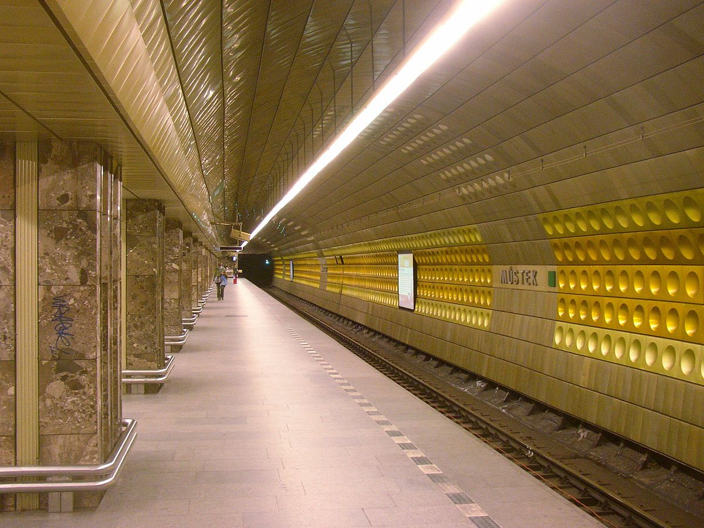
Городской транспорт Праги включает в себя систему метрополитена, трамваев, троллейбусов и автобусов. Метрополитен
состоит из 61 станции и трёх линий общей протяжённостью 59,3 км, различаемых буквами и цветом: зелёная А (станция «Депо
Гостиварж» (чеш. Depo Hostivař) — станция «Больница Мотол» (чеш. Nemocnice Motol), жёлтая В (станция «Черны Мост» (чеш.
Černý Most) — станция «Зличин» (чеш. Zličín), красная С (станция «Летняны» (чеш. Letňany) — станция «Гайе» (чеш. Háje).
В настоящее время в стадии подготовки находится проект строительства четвёртой линии D, соединяющей Главный вокзал с
южными районами Либуш и Писнице.
Город обладает развитой сетью трамвайных линий общей длиной 136 км. После нескольких десятилетий стагнации, когда
раздавались голоса за полную ликвидацию трамвая в чешской столице, в последнее время положение меняется к лучшему:
построены новые современные линии скоростного трамвая в районы Модржаны и Баррандов, есть планы его возвращения на
Вацлавскую площадь и дальнейшего расширения сети в новых районах. Трамвайная сеть покрывает большую часть города, ие
маршруты диаметральные, соединяющие противоположные окраины через центр. Существуют трамвайные и автобусные маршруты,
которые работают только ночью и соединяют центр с окраинами, покрывая практически весь город.
Всего в городе на 1 февраля 2014 года, включая ночные, насчитывается 32 трамвайных маршрута, 200 автобусных и 3 линии
метро, на которых работают 971 трамвай, 1300 автобусов и 202 вагона метро. Помимо этого, в городе есть фуникулёр,
поднимающий туристов на Петршинский холм, и шесть паромных переправ через Влтаву. Кроме того, в систему грированного
общественного транспорта включены участки пригородных железных дорог внутри города, позволяющие пользоваться едиными
проездными документами. Планом развития Праги предусмотрено превращение довольно развитой железнодорожной сети в ную
систему городского рельсового транспорта наподобие берлинской S-Bahn со строительством новых станций и остановочных
пунктов.
Оплата проезда в городском транспорте предварительная. Основной (базовый) талон за 40 крон — пересадочный. От момента
компостирования действует в течение 90 минут днём и ночью на всех видах городского транспорта (в метро, трамвае,
автобусе, фуникулёре, на пароме) столичного транспортного предприятия (чеш. Dopravní podnik hl. m. Prahy) и в
пригородных пассажирских поездах линий S в черте города (тарифные пояса P и 0). Есть талон лимитированный (для коротких
поездок) за 30 крон, также пересадочный (от момента компостирования действует 30 минут). Существуют талоны, действующие
1 день (24 часа) и 3 дня. Бесплатный проезд предоставляется для детей до 6 лет и пенсионеров после 70 лет. Детский тариф
от 6 до 15 лет: половина стоимости взрослого[17]. При соблюдении особых условий транспортного предприятия (бумажный или
электронный именной проездной документ, подробнее на сайте DPP[17]) дети до 15 лет и пенсионеры старше 65 могут ездить
бесплатно, а пенсионеры от 60 до 65 лет за половину тарифа. При входе в транспортное средство или перед эскалатором
метро (или на вокзале, если начало поездки на поезде) необходимо прокомпостировать талон в жёлтом аппарате (только один
раз при первом входе). Турникеты в метро отсутствуют, контроль осуществляется внутри станций и в поездах. Постоянные
пассажиры могут воспользоваться месячными, квартальными и годовыми проездными документами.
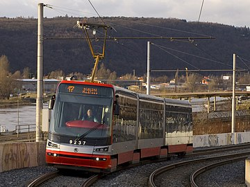
Железнодорожный и воздушный
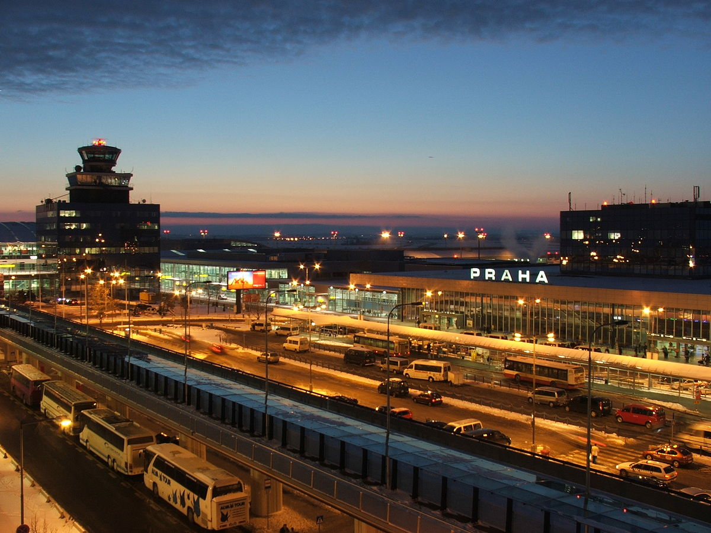
В Праге действует современный аэропорт имени Вацлава Гавела в районе Прага-6. В нём в сутки приземляется до 630
самолётов из Европы, Азии, Африки и Северной Америки. Пассажирооборот аэропорта в 2017 году превысил 15 млн человек. В
2007 году на церемонии World Airport Awards аэропорт Рузине был признан лучшим аэропортом Центральной и Восточной
Европы[20]. Принято решение о строительстве пассажирского терминала аэропорта Водоходы в 15 км к северу от центра
Праги.
Основные поезда, следующие в Прагу, прибывают на Главный железнодорожный вокзал, также называемый Вокзалом президента
Вильсона, находящийся в центре города (ул. Wilsonova 8/300 на границе между округами Прага 1 и Прага 2). Он был открыт в
декабре 1871 года. Историческое здание с куполом построено в 1909 году архитектором Иосифом Фантой в стиле модерн. Тогда
же возведено и двухнефное стальное арочное перекрытие перронов, первое в землях Королевства Чешского. Современные
вокзальные помещения с билетными кассами, залами ожидания и торговыми учреждениями соединены с входом на одноимённую
станцию метро и находятся под уличным уровнем (строились с 1972 по 1979 годы, реконструкция прошла с 2006 по 2012 годы).
До 1919 года вокзал назывался Вокзалом Франца-Иосифа I. Затем до 15 февраля 1940 года и с 1948 до 1953 годы вокзал носил
имя Томаса Вудро Вильсона, в 1990 году обновлено, в честь президента США, настаивавшего на создании независимой
Чехословакии. В период с 1940 по 1948 и с 1953 по 1990 годы назывался Главным вокзалом[22]. Также в Праге действует
вокзал имени Масарика, построенный в 1844 году по проекту архитектора Антонина Юнглинга и обслуживающий в основном
местные железнодорожные перевозки. Северное направление обслуживает транзитный вокзал в Голешовице и западное в Смихове.
ОБРАЗОВАНИЕ
По состоянию на начало 2005—2006 учебного года в Праге насчитывалось 302 детских сада, в том числе 12 частных, 215
базовых школ с 9-летней программой обучения, включая 10 частных, 137 специальных школ, в основном, для учащихся с теми
или иными нарушениями здоровья, 35 музыкально-художественных школ, 60 гимназий; в том числе 25 частных, 95 средних
технических школ (аналог техникума), включая 46 частных, 50 средних специальных школ (по нетехническим специальностям),
из них 20 частных и 36 высших специальных школ, как правило, с 3-летним курсом обучения, дающих неполное высшее
образование (соответствует уровню бакалавра), включая 22 частные.
В Чехии поступить в гимназию можно после 5, 7 или 9 класса общеобразовательной школы. Соответственно обучение будет
длиться 8, 6 или 4 года. Данный тип учебного заведения специализируются на подготовке к поступлению в ВУЗы и считается
самым престижным видом среднего образования.
Город является признанным центром высшего образования Чехии и Восточной Европы. В настоящее время в нём насчитывается 8
высших учебных заведений, финансируемых из государственного бюджета:
-
Карлов университет основан в 1348 году, самый старый университет «к северу от Альп и к востоку от Рейна», 49 тыс.
студентов и аспирантов;
-
Чешский технический университет основан в 1707 году, первое высшее гражданское техническое учебное заведение в мире,
23,5 тыс. студентов и аспирантов;
-
Высшая школа экономики основана в 1919 году, 16 тыс. студентов и аспирантов;
-
Чешский агротехнический университет основан в 1952 году, 14,5 тыс. студентов и аспирантов;
-
Высшая химико-технологическая школа основана в 1920 году, 3,9 тыс. студентов и аспирантов;
-
Академия музыкального искусства помимо собственно музыкального факультета (HAMU[cs]), готовит специалистов в области
кино и телевидения (FAMU[cs]), а также театрального искусства (DAMU); основана в 1945 году, 1,2 тыс. студентов и
аспирантов;
-
Высшая школа прикладного искусства основана в 1885 году, обучение по специальностям архитектура, прикладное искусство и
дизайн, 450 студентов и аспирантов;
-
Академия изобразительного искусства основана в 1799 году, 250 студентов и аспирантов.
Кроме того, в Праге насчитывается 21 высшее учебное заведение, принадлежащие частным компаниям или фондам, которые, в
основном, готовят специалистов в области коммерции, менеджмента и юриспруденции. Наиболее крупными из них являются
Университет им. Я. А. Коменского, Высшая школа финансов и административного дела и Институт банковского дела (все вместе
обучают более 3 тысяч студентов). Общее число студентов в университетах и высших школах составляет более 130 тыс.
человек, или почти 12 % её населения.
СПОРТ
Ежегодно в Праге проводится множество спортивных соревнований. Среди них можно выделить Пражский марафон и Пражский
полумарафон. В городе базируются футбольные клубы «Виктория», «Дукла», «Богемианс», «Славия» и «Спарта» и хоккейные
клубы чешской экстралиги «Спарта» и «Славия».
В 1920—1930 годах в Праге был построен крупнейший в мире, 202×310 м, универсальный Страговский стадион с трибунами на
более чем 200 тыс. мест, использовавшийся для проведения вначале слётов чешского физкультурно-патриотического общества
«Сокол», а затем спартакиад. По своей вместимости с ним может соперничать только стадион для проведения автогонок в
американском Индианаполисе. В 1932 году на острове Штванице построен первый в Европе стадион с искусственным льдом,
место проведения четырёх чемпионатов мира по хоккею с шайбой.
КУЛЬТУРА
Прага является традиционным европейским культурным центром, местом проведения многих известных мероприятий мирового
значения: международные музыкальные фестивали «Пражская весна» и «Дворжаковская Прага»[24], Prague Proms[25], Пражский
писательский форум, Международный фестиваль документального кино о правах человека «Один мир», Пражский фестиваль
экспериментального искусства, Всемирный фестиваль цыганского искусства, Международный конкурс-фестиваль
детско-юношеского творчества «Волшебные звёзды Праги» и другие.
К наиболее известным центрам пражской культурной жизни относятся Национальный театр, концертный зал и галерея
«Рудольфинум» (резиденция Чешского филармонического оркестра), Общественный дом, Государственная опера Праги (с 2011
года часть Национального театра)[26], Театр «Латерна магика», Театр Спейбла и Гурвинека, Национальный музей,
Национальный технический музей, музей им. Напрстека (музей азиатского, африканского и американского искусства), вилла
«Бертрамка» (дом-музей В. А. Моцарта), Национальная галерея.
Всего в городе насчитывается 86 публичных библиотек, 84 театра с постоянной сценой, 34 кинотеатра, 74 музея, 160
художественных галерей и множество концертных залов и музыкальных клубов. В последние годы столица, как и Чехия в целом,
приобрела известность как место съёмок многих фильмов американских и европейских кинорежиссёров благодаря развитой
кинопромышленности (известная киностудия «Баррандов»), неповторимой средневековой архитектуре, которая часто
используется в качестве «городской кулисы», относительно невысоким ценам и льготному налоговому режиму.
В Праге жил раввин Йегуда Лев Бен Бецалель (Махараль), который, по легенде, сотворил самого известного голема. По
преданию, голем был сотворён на берегу Влтавы из четырёх стихий. Останки голема до сих пор лежат на чердаке Староновой
синагоги, самой старой в Европе, действующей и поныне. В ней сохранён в неприкосновенности стул, на котором раввин сидел
во время молитв. Во время экскурсий гиды рассказывают ренессансную притчу о големе, которая была развита в произведениях
Карела Чапека и Густава Майринка.
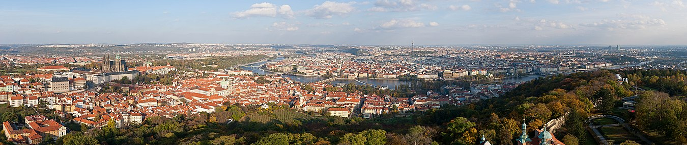

АРХИТЕКТУРА
Прага многими экспертами и туристами признаётся одним из красивейших городов Европы. В числе основных
достопримечательностей Праги 18 каменных и стальных мостов, соединяющих берега Влтавы. Один из самых известных, Карлов
мост, произведение средневекового зодчества. Шедевром европейской готической архитектуры является собор Святого Вита,
строительство которого велось почти 600 лет. Город славится своими фонтанами. Пять центральных исторических районов в
1993 году были включены в число объектов Всемирного наследия юнеско как архитектурно-исторический заповедник.
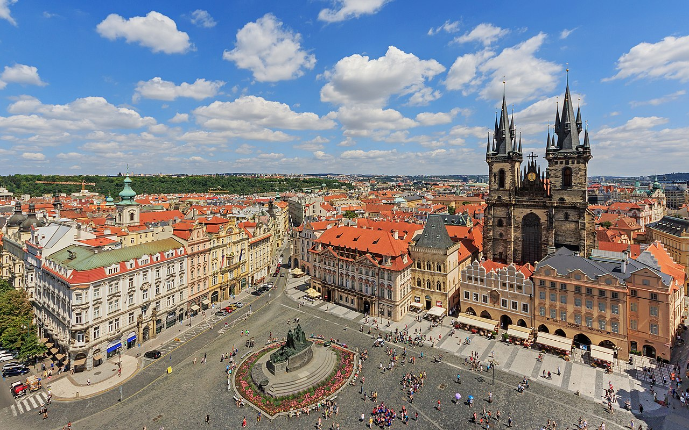
-
Старый город (Старе-Место) с рыночной площадью (Староместская площадь), ратушей с курантами, Тынским храмом и памятником
Яну Гусу.
-
Карлов мост.
-
Малый город (Мала Стра́на) с многочисленными дворцами и садами.
-
Пражский Град с собором Святого Вита.
-
Злата улочка.
-
Йозефов (средневековый еврейский квартал-гетто) со Старым еврейским кладбищем, Староновой и Пинкасовой синагогами.
-
Средневековая крепость Вышеград.
-
Страговский монастырь.
-
Пражский зоопарк и ботанический сад с тропической оранжереей в Трое.
-
Новый город (Нове Место) с улицей На Пршикопе, Вацлавской площадью и Национальным музеем.
-
Петршинская башня, подобная Эйфелевой в масштабе 1:5.
-
Телебашня в районе Жижков с кафе, смотровой площадкой и оригинальным скульптурным украшением Давида Черни.
-
Метроном в Летенских садах, гигантский механизм, словно парящий над городом.
-
Деконструктивистский «Танцующий дом» (архитекторы Фрэнк Гери и Владо Милунич) и другие памятники архитектуры XX века в
стиле модерн, кубизм, функционализм и современная архитектура.
-
Церкви, например, Церковь Пресвятого Сердца Господня на Виноградах.
-
Музеи, здания и места, связанные со знаменитыми пражанами и гостями Праги (композиторы Моцарт, Сметана и Дворжак,
художник Муха, писатели Кафка, Гашек, Майринк и др).
-
Пороховая башня.
-
Тройский замок — на самом деле не замок, а лёгкий летний загородный дворец в стиле барокко.
-
Ольшанское кладбище.
-
Бронзовый памятник Яну Жижке на холме Витков (высота 9 м, масса 16,5 т), открытый в 1950 году, ныне считается четвёртой
по величине бронзовой конной статуей в мире.
-
Церковь Девы Марии Снежной.
-
Храм святого Мартина в стене.
-
Эммаусский монастырь.
Полицентричность Праги
На сегодняшний день Прага состоит из районов, которые долгое время считались отдельными городами (Старе-Место, Нове
Место, Градчаны, Мала-Страна, Вышеград). В прошлом они не только имели различный статус, систему подчинения, управления,
финансов и т. д., но зачастую и враждовали между собой, иногда доходя до настоящих военных действий. Первая попытка
объединения пражских городов относится к 1518 году, когда горожане Старого Места объединились с Новым Местом, в 1523
году это событие было подтверждено королевским указом Людовика Ягеллонского. Однако уже спустя десять лет, после
избрания чешским королём Фердинанда Габсбурга, противоречия между горожанами в отношении его политики привели к их
повторному разъединению. Окончательно объединить отдельные города на территории Праги удалось только в 1784 во время
правления императора Иосифа II, известного реформатора. История Праги до 1784 года — это история каждого из этих
городов, на сегодняшний день её кварталов.
Пражский Град
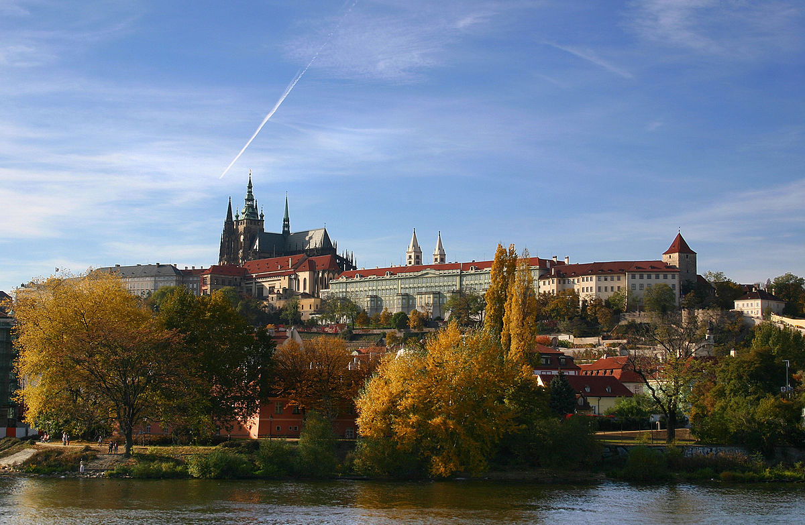
Старый город
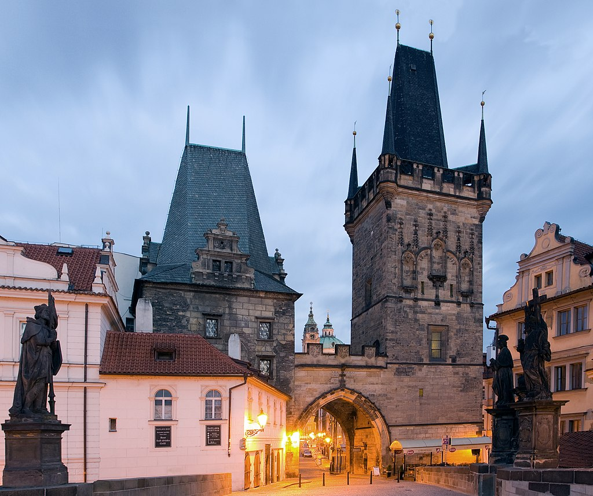
Мала Страна

Градчаны
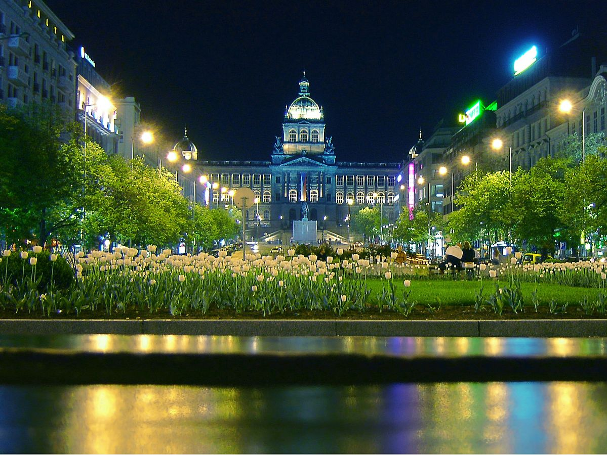
Новый Город